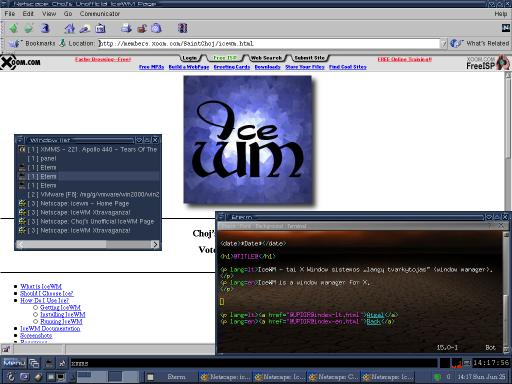
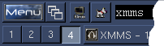
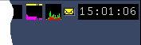
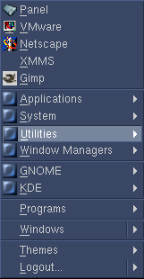
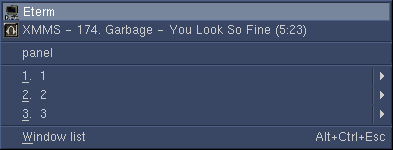
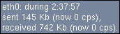
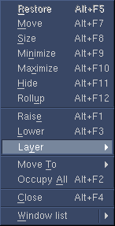
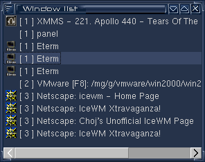
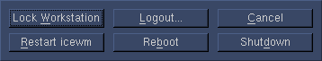
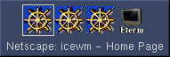

Turinys
- Naujienos
- Kaip aš radau IceWMą
- Kaip aš gyvenu
- Mano IceWM patobulinimai
- Mano IceWM konfigūracija
- Nuorodos
Naujienos
- 2000-06-26
- Ištaisyta klaida viename „lope“: patch-1.0.4.mg.winlist.2: dėl šios klaidos IceWM'as galėdavo lūžti uždarant langą.
- 2000-06-25
- Šis puslapis sukurtas.
Kaip aš radau IceWMą
Ilgą laiką aš nenaudojau X Window sistemos. Priežasčių buvo kelios - mano video korta (S3 Trio3D) buvo prastai palaikoma, X'ai buvo nelabai patogūs, be to aš visada buvau linkęs prie klaviatūros ir komandų eilutės. Porą kartų išbandžiau KDE bei GNOME, bet nebuvau sužavėtas ir grįžau į komandų eilutę. Tačiau kartą Freshmeat'e ar kažkur kitur pamačiau IceWM'o aprašymą ir mane sudomino žodžiai „pelė - nebūtina“. Nusprendžiau išbandyti ir IceWM'as mane pavergė. Užmiršau konsolę ir dabar naudoju vien tik X'us (tiesa, komandų eilutės neišsižadėjau - X'uose naudoju praktiškai vien tik xterm'us, tiksliau, Eterm'us).
IceWM - tai X Window sistemos „langų tvarkytojas“ (window manager). Jo tikslai - greitis ir patogumas, tačiau išvaizda dėl to per daug nenukenčia. (O štai Enlightenment'as prarado tiek greitį, tiek patogumą, siekdamas išvaizdos...). Tiesa, standartinė tema atrodo baisokai, bet laimingo atsitiktinumo dėka susidūriau su blueHeart tema. Kito laimingo atsitiktinumo dėka mano kompiuteryje tuo metu nebuvo suinstaliuoti blueHeart temos naudojami šriftai. Vėliau smalsumo genamas aš juos susiradau, susiinstaliavau, pažiūrėjau ir iškart išmečiau. Išvaizda gal ir graži, užtat įskaityti nieko neįmanoma. Dabar gyvenu su šiek tiek pamodifikuota blueHeart tema (apie tai žr. žemiau).
Kaip aš gyvenu
Gal užteks šnekėti apie išvaizdą - laikas ją parodyti. Daugmaž
taip atrodo mano darbastalis:

Fone matote Netscape Navigator'ių, kuris šiaip būna paleistas tik
ypatingomis progomis (kasdieniniam naršymui naudoju Links'ą).
Kairėje pusėje - IceWM'o langų sąrašas, dešinėje - Eterm'as, kur aš ką tik
buvau pradėjes rinkti šį puslapį (tekstų redaktorius - VIM'as). Apačioje vienas ant kito sudėti
IceWM taskbar'as ir GNOME Panel'is.
{kind=link}
Beje, laikas būtų įspėti, kad IceWM'as yra labai lankstus. Tai kas parodyta šiame puslapyje, yra mano konfigūracija. Pas jus IceWM'as gali atrodyti bei elgtis visiškai kitaip. Be to, aš šiek tiek esu pamodifikavęs savo IceWM'ą (tegyvuoja Open Source!).
Pažvelkime į IceWM'o taskbarą atidžiau:
|  |  |
{kind=link}
- Kairėje viršuje - tradicinis Start meniu, iškviečiamas
nuspaudus Ctrl+Esc (Win95 klavišus aš naudoju naudingesniems tikslams).
Nelabai naudingas daiktas, bet kartais praverčia.
 - Šiek tiek dešiniau - langų sąrašas. Bet greičiau yra
išsikviesti atskirą langų sąrašo langelį nuspaudus Win+Esc.
 - Dar toliau į dešinę - programų paleidimo mygtukai (aprašomi ~/.icewm/toolbar faile). Klaviatūros mylėtojai jų nenaudos, o spaudys ~/.icewm/keys faile aprašytus klavišus. Win+t = Eterm'as, Win+m = Mutt'as.
- Ir dar toliau - komandų eilutė. Šičia galima paleidinėti X'ines programas neatsidarinėjant xterm'o, arba paleidinėti konsolines programas, nuspaudus Ctrl+Enter vietoje Enter. Į komandų eilutę galima greitai patekti nuspaudus Win+Space. Deja, nėra nei istorijos, nei automatinio failų vardų užbaigimo.
- Antroje eilėje keturi mygtukai atitinka keturis darbastalius. Šiuo metu aktyvus ketvirtasis. Tarp darbastalių galima vaikščioti klavišais Win+Left/Right, o Win+Down šokinės tarp šio ir prieš tai aktyvaus darbastalio. Į bet kurį iš jų galima greitai pereiti nuspaudus Win+1..4. O jei naudodamiesi kuriuo nors iš šių metodų dar laikysite nuspaustą Shift klavišą, tai kartu į kitą darbastalį pasiimsite ir aktyvų langą.
- Toliau eina užduočių juosta. Nieko ypatingo. Tarp langų galima vaikščioti spaudant Alt+Tab (arba Alt+Esc). Minimizuoti langai rodomi tamsesne spalva. Paslėpti langai išvis nerodomi, prie jų prieiti galima tik per langų sąrašą.
- Dešinėje - laikrodis. Palaikę virš jo pelę, pamatysite ir datą.
- Kiek kairiau - paštas! Aš gavau laišką! Net septynis laiškus! :)
- Dar kairiau - procesoriaus užimtumo per paskutines 10 sekundžių grafikas.
- Ir dar kairiau - mano mėgiamiausias - tinklo trafiko grafikas.
Standartiškai jo tooltips'as atrodo kiek kitaip ir pateikia mažiau
informacijos, bet tam ir yra source kodas.

Sumažinus GNOME Panelį iki 24 pikselių aukščio ir parinkus jam atitinkamą spalvą, jis labai gražiai prisiderina prie IceWM taskbar'o. Tiesa, aš GNOME panelį vartoju praktiškai vien dėl ICQ (GnomeICU) ikonėlės.
Kiti IceWM'o atributai:
- Lango meniu (iškviečiamas nuspaudus Alt+Space). Kaip matote,
visas operacijas galima atlikti vien klavišais.
 - Tampant langus po ekraną, jie automatiškai "prilimpa" prie kitų langų ar ekrano krašto. Nepaprastai patogu. O jei tepatinka - tereikia laikyti nuspaudus Alt klavišą.
- Langų sąrašas, iškviečiamas nuspaudus Win+Esc. Galite čia
aktyvuoti bet kurį langą, arba pasižymėti kelis ir juos visus kartu
paslėpti/uždaryti/ išdėstyti stulpeliais/eilutėmis ir taip toliau.
 - Nuspaudę magiškąją trijų pirštų kombinaciją Ctrl+Alt+Del (arba
tiesiog Win+Del), galite atlikti daug įdomių veiksmų, pvz., perkrauti ar
išjungti kompiuterį, perkrauti IceWM'ą, išsiloginti arba tiesiog užrakinti
ekraną.

Mano IceWM patobulinimai
Čia rasite kelis mano darytus „lopus“ (angl. patches) IceWM'ui. Failo vardas sudarytas iš žodžio „patch“ (kad būtų aišku, kas tai), IceWM versijos numerio (su kuria šie „lopai“ daryti), autoriaus inicialų (mg - tai aš ;), pavadinimo bei „lopo“ versijos numeriuko. Be panikos - visi jie veikia ir su naujausia 1.0.4 versija, tiesiog kai kur gali skirtis eilučių numeriai.
- patch-1.0.0.mg.lastconsole.1 leidžia šokinėti tarp šio ir praeito darbastalio nuspaudus Win+Down.
- patch-1.0.1.mg.tooltip.1 leidžia tooltips'ams kaboti amžinai, kai ToolTipTime = 0.
- patch-1.0.4.mg.winlist.2 rodo papildomą informaciją langų sąraše: darbastalio numerį bei būseną (paslėptas/minimizuotas).
- patch-1.0.4.mg.movesize.1 prideda porą patogių klavišų langų stumdymo metu.
- patch-1.0.4.mg.ppp.2
rodo naudingesnę informaciją tinklo grafiko tooltip'se:
- patch-1.0.4.mg.alttab.2
patobulintas (išvaizdos prasme) Andy Oliver „lopas“,
keičiantis Alt+Tab langelio išvaizdą į štai tokią:

Mano IceWM konfigūracija
Čia rasite mano ~/.icewm/ katalogo turinį:
- preferences failas nurodo pagrindinius IceWM parametrus.
- winoptions failas aprašo įvairių programų parametrus. Jis pas mane nelabai tvarkingas :)
- toolbar failas aprašo paleidimo mygtukus taskbar'e.
- keys failas aprašo greitus programų paleidimo klavišus.
- menu failas aprašo Start meniu turinį. Pas mane šis failas yra generuojamas make.sh skriptuko iš menu.src, reikiamose vietose įterpiant GNOME bei KDE meniu turinį. Irgi netvarka. Beje, kur gavau gno2ice.pl bei kde2ice.pl skriptukus, nepamenu.
- programs failas taip pat dalyvauja Start meniu kūrime. Netvarkytas šimtą metų - aš Start meniu nenaudoju.
- icons/ kataloge voliojasi 1243 ikonytės. Beveik visos yra nenaudojamos, o reikalingų (pvz. XMMS'ui) nėra...
- mailbox/ kataloge yra šiek tiek perpieštos pašto ikonėlės taskbar'ui (naudojant standartines sunku iš didesnio atstumo įžiūrėti, yra pašto, ar nėra).
- themes/ kataloge yra iš visur pritempta daugybė temų. Aš naudoju tik mano modifikuotą blueHeart temą. Jei norite ją išbandyti, atsisiųskite blueHeart iš icewm.themes.org ir vietoje ten esančio default.theme failo naudokite mg.theme.
Nuorodos
O kaip gi be jų :)
- icewm.sourceforge.net - oficialus IceWM puslapis.
- IceWM Network - IceWM tinklas.
- IceWM FAQ - IceWM dažnai užduodami klausimai.
- IceWM Xtravaganza - nuorodos ir t.t.
Kiek žinau, VA Linux firma yra užregistravusi icewm.org domeną, tačiau iki šiol ten nėra jokio tinklapio.